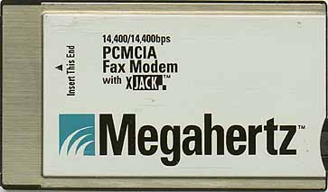
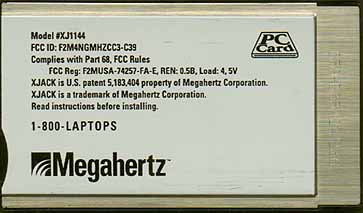
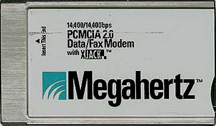
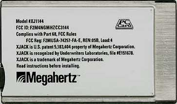
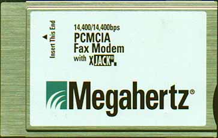
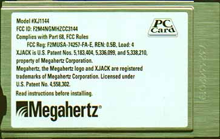

Megahertz XJ1144 Modems with XJack
|
| Test | Megahertz XJ1144 that WILL Work |
Megahertz XJ1144 that WILL NOT Work |
|---|---|---|
| Backside |
|
|
| ATI3 |
V1.000 or V1.300-AP39 |
RX10I |
| ATI4 |
RC32ACL FL0/RQ50 or RC32ACL-F1-RI10F |
Mfr=MEGAHERTZ CmdSet=MHZ_R Mod=V.32bis Fax=1,2 ErrC=V.42bis,MNP5,MNP10 |
| ATI6 |
144DPL+FAX or RC144DPL Rev CE |
C40 R6669-12 C5902-14 RC144DPL Rev CA |
Below are front and back images of the variations of the Megahertz XJ1144 modems that are known to work with the PC Plus. See the above table for specific descriptions. I have tested all variations below and they work fine with my PC Plus!
| Megahertz XJ1144 Variation 1 | |
|---|---|
|
 |
|
|
 |
|
| Variation 1 is the more desirable modem because the XJack sits flush with the side of the modem when pushed all the way in. This variation also includes a tiny internal speaker so you can hear it dial out. |
| Megahertz XJ1144 Variation 2 | |
|---|---|
|
 |
|
|
 |
|
| Variation 2 appears to be the older variation. Although the images do not show it, the XJack nub sticks out about 0.25" from the side of the modem even when pushed all the way in. Also, this modem has no internal speaker so you cannot hear it dial out. |
2/17/00 Update - I found a new variation of the Megahertz XJ1144
modem that works with the PC Plus! See below.
| Megahertz XJ1144 Variation 3 | |
|---|---|
|
 |
|
|
 |
|
|
Variation 3 appears to be a cross between
variation 1 and variation 2!
The frontside resembles variation 1's frontside but
the backside resembles variation 2's backside
including the exact FCC ID number!
The XJack sits flush with the side of the modem when pushed all the way in like variation 1 but there is no internal speaker like variation 2! So you cannot hear the modem dial out. This modem has a registered trademark symbol, ®, on the frontside near the XJack logo and there are more patent numbers on the backside so supposedly it is newer than both variations above! But it has no internal speaker (Surely having a speaker is an improvement). Weird. |
| Fujitsu Poqet PC Plus Review |